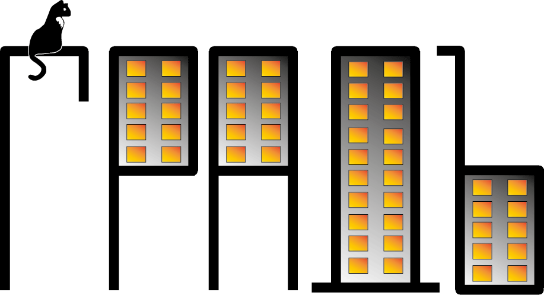

Жилая недвижимость
-
Виды строений:
- Многоквартирный дом
- Общежитие
- Индивидуальный жилой дом
- Таунхаус
- Дача
-
Механизмы приобретения и реализации:
- Купля-продажа
- Ипотека
- Рассрочка
- Долевое строительство
- Жилищно-строительный кооператив
- Дарение
- Социальное жилье
-
Виды управления:
- Управляющая компания
- Товарищество собственников жилья
- Жилищно-строительный кооператив
Жилая недвижимость — это жилые дома, квартиры, иные жилые помещения в жилых домах и строениях, пригодные для постоянного и временного проживания граждан, отвечающее установленным санитарным и техническим требованиям, а также для использования в установленном порядке в качестве служебных жилых помещений и общежитий.